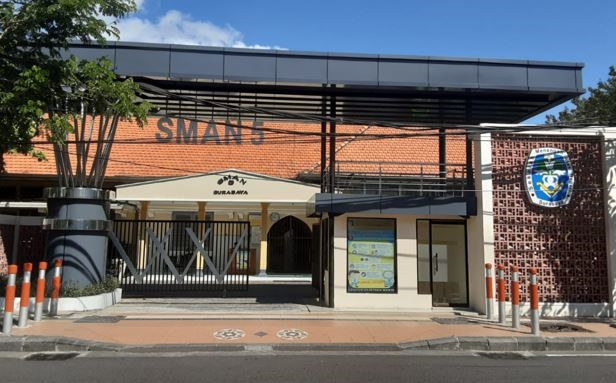
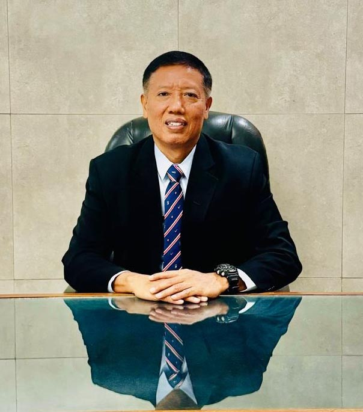

Selamat Datang di Smalabaya
Mengenal SMA Negeri 5 Surabaya, sekolah di kawasan SMA Komplek Wijaya Kusuma, Surabaya.

Sambutan Kepala Sekolah

Assalamu'alaikum warahmatullahi wabarakatuh.
Selamat datang di halaman profil SMA Negeri 5 Surabaya. Semoga halaman ini membantu siswa, orang tua, dan masyarakat mengenal lingkungan belajar kami. Mari membangun kebiasaan belajar yang baik, saling menghargai, dan berani mengembangkan bakat.
Pendidikan tumbuh melalui kerja sama antara sekolah, keluarga, dan siswa. Bersama, kita dapat menciptakan suasana belajar yang nyaman dan memberi ruang bagi setiap siswa untuk berkembang.
Wassalamu'alaikum warahmatullahi wabarakatuh.
Sukirin Wikanto, S.Pd., M.Pd.
Kepala Sekolah
Visi & Misi
Visi
- Membentuk pribadi unggul yang beriman, memiliki pengetahuan luas, siap menghadapi perubahan, dan peduli pada lingkungan
Misi
- Memperkuat keimanan dan ketakwaan siswa.
- Melatih kecakapan hidup melalui pembelajaran di kelas.
- Mengasah keterampilan melalui kegiatan ekstrakurikuler.
- Membantu siswa mengembangkan kemampuan untuk bersaing secara global.
- Membangun karakter dengan wawasan dunia dan kepedulian lingkungan.